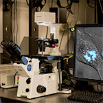
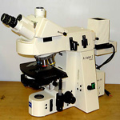

-
 Confocal: Olympus FV1000 (HSRB)
Confocal: Olympus FV1000 (HSRB) -

Widefield: Olympus IX71
-
 Multiphoton Confocal: Zeiss 710
Multiphoton Confocal: Zeiss 710 -
 Widefield: BioTek Lionheart FX
Widefield: BioTek Lionheart FX -
 Confocal: Nikon A1R
Confocal: Nikon A1R -
 Confocal: Nikon A1R HD25
Confocal: Nikon A1R HD25 -
 Confocal: Olympus FV1000 Upright
Confocal: Olympus FV1000 Upright -
Confocal: Olympus FV1000 Inverted
-
Light Sheet: 3i Lattice Light Sheet
-
Super-res: GE DeltaVision OMX Blaze
-
 Confocal: Leica SP8
Confocal: Leica SP8 -
Multiphoton Confocal: Leica SP8 MP
-
 Super-res: Nikon N-SIM
Super-res: Nikon N-SIM -
 Widefield: Olympus IX51
Widefield: Olympus IX51 -

Widefield: Zeiss Axioplan 2
-
 Widefield: Zeiss Observer.A1
Widefield: Zeiss Observer.A1 -
Confocal: Nikon Crest Spinning Disk